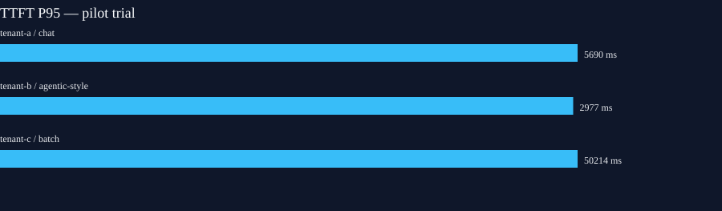

KIP text pilot PARTIAL
Run pilot-text-20261013-024900-colomix · 2026-10-13T02:48:49.501863Z – 2026-10-13T02:53:37.687687Z
This is an interim single-trial validation of reviewed synthetic tenant cohorts through the llm-d-routed pilot pool. It is not the accepted nominal SLO campaign.
Performance and estimated cost
| Tenant | Class | Offered | Completed | Rejected | TTFT P95 ms | TPOT P95 ms | E2E P95 ms | Output tok/s | Proposed SLO checks | Tenant estimate USD* |
|---|
| tenant-a | chat | 136 | 136 | 0 | 5690.09 | 23.89 | 9348.56 | 158.02 | success:pass, ttft:miss, tpot:pass | 0.04361 |
| tenant-b | agentic-style | 131 | 131 | 0 | 2977.15 | 26.22 | 10093.53 | 128.06 | success:pass, ttft:miss, taskCompletion:pass | 0.033978 |
| tenant-c | batch | 100 | 96 | 4 | 50213.98 | 21.67 | 60683.13 | 214.07 | success:miss, completionWithinTenMinutes:pass | 0.127352 |
*Illustrative output-token-share of allocated infrastructure cost; not an invoice or measured per-tenant usage.

Cost audit
Verified fleet rental: $2.0474/hour. Exact 2026-10-13T02:48:00Z,2026-10-13T02:54:00Z audit $0.204741; OpenCost idle-inclusive allocation $0.204940; difference 0.097%.
Data quality and remaining acceptance
- At least one proposed class SLO check was missed in this trial.
- 42 colocated Gateway start timestamps preceded the client send marker by at most 1 ms and were normalized to send time for lifecycle ordering; raw timing evidence remains private.
- 4 requests were rejected with exact AIPerf/Gateway/EPP evidence of llm-d queue-TTL HTTP 429; they are not counted as completed or token-producing requests.
- At least one class has fewer than 100 completed samples in this trial.
- Only one trial per class is present; three independent trials and confidence intervals are required for nominal SLO acceptance.
- No voice pipeline, noisy-tenant stress, worker-failure, or clean-rebuild evidence yet.
- Per-request EPP queue transitions are unavailable; queued is not inferred from aggregate samples.
- Tenant cost is an output-token-share estimate, not bill-reconciling attribution.
- Output-token-share tenant cost attribution excludes the queue occupancy of rejected requests.
- AIPerf exported zero-duration error rows for queue-TTL rejections; their terminal times come from matching Envoy access-log start plus duration.
Open exact-window Grafana dashboard (requires local port-forward). JSON · CSV · Reproducibility.